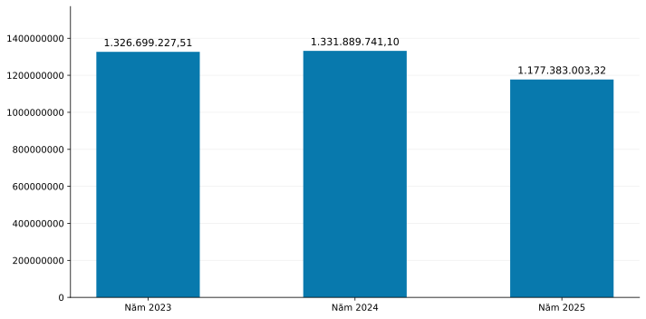
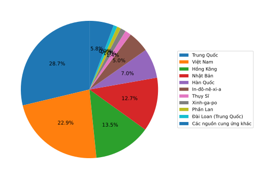
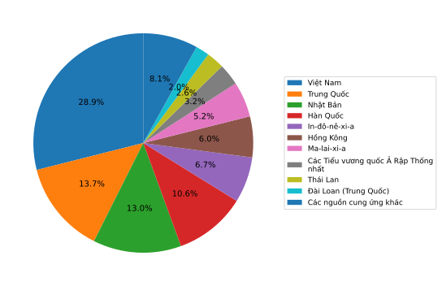
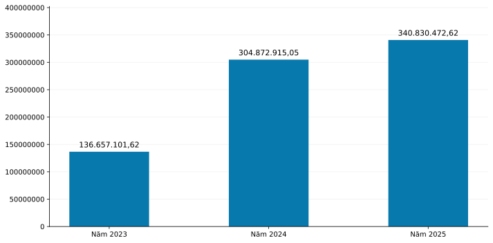
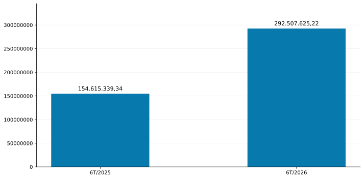

Đài Loan (Trung Quốc) khởi xướng điều tra chống bán phá giá đối với thép không gỉ cán nguội nhập khẩu từ Việt Nam
Ngày 14 tháng 8 năm 2026, Cơ quan quản lý Tài chính Đài Loan (MOF) ban hành Thông báo khởi xướng điều tra chống bán phá giá (CBPG) đối với một số sản phẩm thép không gỉ cán nguội dạng phẳng nhập khẩu từ Việt Nam, trên cơ sở đơn yêu cầu của Công ty Cổ phần Thép Yieh United và Công ty Cổ phần Nhà máy Cơ khí Tang Eng.
Sản phẩm bị điều tra là thép không gỉ cán nguội dạng phẳng, dạng cuộn hoặc không cuộn, có độ dày từ 0,05 mm đến 6,10 mm, với thành phần niken từ 5% đến 20%, crôm từ 15% đến 25%, mangan không quá 3% và nhôm không quá 0,5%. Sản phẩm có bề mặt được phủ, mạ hoặc bọc kim loại không thuộc phạm vi điều tra. Sản phẩm chủ yếu được sử dụng trong sản xuất đồ dùng nhà bếp, thiết bị gia dụng, xây dựng, hàng không vũ trụ, hóa dầu, cơ khí và giao thông vận tải. Các mã HS liên quan được nêu cụ thể trong Thông báo khởi xướng; tuy nhiên, mã HS chỉ mang tính tham khảo và phạm vi sản phẩm được xác định theo mô tả hàng hóa.
Thời kỳ điều tra CBPG từ ngày 01 tháng 7 năm 2025 đến ngày 30 tháng 6 năm 2026. Theo đơn yêu cầu, biên độ phá giá bị cáo buộc đối với hàng hóa của Việt Nam là 31,36% trong năm 2025. Đây là mức cáo buộc của nguyên đơn và chưa phải kết luận của cơ quan điều tra.
Theo quy trình điều tra của Đài Loan, MOF đã chuyển vụ việc cho Cơ quan quản lý Kinh tế Đài Loan (MOEA) điều tra thiệt hại đối với ngành sản xuất trong nước. MOEA có 40 ngày để đưa ra kết luận sơ bộ về thiệt hại; nếu xác định có thiệt hại, MOF sẽ tiến hành xác định sơ bộ về bán phá giá trong vòng 70 ngày để xem xét áp dụng thuế CBPG tạm thời. Nguyên đơn cũng đề nghị truy thu thuế CBPG đối với hàng hóa nhập khẩu trong 90 ngày trước thời điểm áp dụng thuế tạm thời nhằm hạn chế khả năng gia tăng nhập khẩu trong thời gian điều tra.
Theo thông báo, có 20 doanh nghiệp sản xuất, xuất khẩu Việt Nam thuộc diện được xác định. Các doanh nghiệp liên quan phải đăng ký tham gia vụ việc trong vòng 20 ngày kể từ ngày công bố thông báo. Doanh nghiệp hợp tác đầy đủ có thể được xem xét áp dụng mức thuế riêng; trường hợp không đăng ký hoặc không hợp tác có thể bị xác định biên độ phá giá dựa trên thông tin sẵn có bất lợi.
Cục Phòng vệ thương mại khuyến nghị các doanh nghiệp liên quan chủ động xác định hàng hóa có thuộc phạm vi điều tra, đăng ký tham gia đúng thời hạn, rà soát và chuẩn bị đầy đủ hồ sơ, số liệu về sản xuất, bán hàng, chi phí và xuất khẩu; đồng thời phối hợp đầy đủ, kịp thời với cơ quan điều tra Đài Loan để bảo vệ quyền và lợi ích hợp pháp, hạn chế nguy cơ bị áp dụng mức thuế bất lợi.
Doanh nghiệp có thể tra cứu Thông báo khởi xướng, bản công khai đơn yêu cầu và các mẫu đơn đăng ký tham gia vụ việc trên trang thông tin của Cơ quan Hải quan, Cơ quan quản lý Tài chính Đài Loan. Cục Phòng vệ thương mại sẽ tiếp tục theo dõi và cập nhật diễn biến vụ việc.
TIN TRONG NƯỚC
Cục Phòng vệ thương mại thông báo về việc tiếp nhận hồ sơ yêu cầu rà soát biện pháp chống bán phá giá đối với một số sản phẩm thép hợp kim hoặc không hợp kim được cán phẳng, được sơn xuất xứ từ Đại Hàn Dân quốc và Cộng hòa nhân dân Trung Hoa
Ngày 24 tháng 10 năm 2024, Bộ Công Thương ban hành Quyết định số 2822/QĐ-BCT về kết quả rà soát cuối kỳ việc áp dụng biện pháp chống bán phá giá đối với một số sản phẩm thép hợp kim hoặc không hợp kim được cán phẳng, được sơn có xuất xứ từ Đại Hàn Dân quốc và Cộng hòa nhân dân Trung Hoa (mã vụ việc AD04). Theo đó, biện pháp chống bán phá giá tiếp tục được gia hạn thêm 5 năm.
Căn cứ Điều 51 Nghị định số 86/2025/NĐ-CP, Cục Phòng vệ thương mại (Cơ quan điều tra) đã thông báo tiếp nhận hồ sơ yêu cầu rà soát của các bên liên quan đối với việc áp dụng thuế chống bán phá giá đối với các sản phẩm nêu trên.
Theo quy định tại Điều 56 Nghị định số 86/2025/NĐ-CP, các bên liên quan có quyền nộp hồ sơ yêu cầu rà soát. Hồ sơ phải bảo đảm đầy đủ các thông tin, tài liệu theo quy định tại khoản 1 Điều 57 Nghị định số 86/2025/NĐ-CP.
Thời hạn tiếp nhận hồ sơ yêu cầu rà soát: chậm nhất ngày 21 tháng 9 năm 2026.
Cục Phòng vệ thương mại đề nghị các bên liên quan nghiên cứu kỹ các quy định và hướng dẫn tại Thông báo để thực hiện việc nộp hồ sơ đúng thời hạn, đầy đủ theo quy định.
TIN TRONG NƯỚC
Cục Phòng vệ thương mại ban hành Bản câu hỏi điều tra cho nhà sản xuất trong nước và nhà nhập khẩu – Vụ việc điều tra áp dụng biện pháp chống bán phá giá đối với một số sản phẩm thanh thép dự ứng lực có xuất xứ từ Cộng hòa nhân dân Trung Hoa
Ngày 27 tháng 7 năm 2026, Bộ trưởng Bộ Công Thương ban hành Quyết định số 1903/QĐ-BCT về việc điều tra áp dụng biện pháp chống bán phá giá đối với một số sản phẩm thanh thép dự ứng lực có xuất xứ từ Cộng hòa nhân dân Trung Hoa (mã vụ việc AD24).
Để thu thập thông tin, số liệu phục vụ điều tra, Cơ quan điều tra đã ban hành Bản câu hỏi điều tra dành cho nhà sản xuất trong nước và nhà nhập khẩu. Bản câu hỏi được đăng tải trên Hệ thống tiếp nhận Hồ sơ PVTM (online.trav.gov.vn), Cổng thông tin điện tử của Cục Phòng vệ thương mại (pvtm.gov.vn) và Bộ Công Thương (moit.gov.vn).
Thời hạn nộp Bản trả lời câu hỏi là trước 17h00 ngày 14 tháng 9 năm 2026 (giờ Hà Nội). Doanh nghiệp thực hiện nộp trực tuyến thông qua Hệ thống tiếp nhận Hồ sơ PVTM tại online.trav.gov.vn. Hướng dẫn chi tiết về cách thức, hồ sơ và yêu cầu nộp được quy định tại Phụ lục 3 và các tài liệu kèm theo Bản câu hỏi.
Cục Phòng vệ thương mại đề nghị các nhà sản xuất trong nước và nhà nhập khẩu có liên quan tham gia trả lời Bản câu hỏi và hợp tác đầy đủ trong suốt quá trình điều tra. Thông tin do doanh nghiệp cung cấp là cơ sở để Cơ quan điều tra xem xét, đánh giá và đưa ra kết luận vụ việc. Trường hợp không nộp đúng hạn hoặc cung cấp thông tin không đầy đủ, không chính xác theo yêu cầu, doanh nghiệp có thể bị áp dụng quy định tại Điều 9 Nghị định số 86/2025/NĐ-CP về bên liên quan không hợp tác trong vụ việc phòng vệ thương mại.
Đối với nhà nhập khẩu hàng hóa bị điều tra, bên cạnh việc trả lời Bản câu hỏi, doanh nghiệp cần chủ động thông báo cho các nhà sản xuất, xuất khẩu nước ngoài có liên quan để các doanh nghiệp này thực hiện trả lời Bản câu hỏi dành cho nhà sản xuất, xuất khẩu nước ngoài, qua đó bảo đảm quyền và lợi ích hợp pháp trong quá trình điều tra.
Cục Phòng vệ thương mại lưu ý doanh nghiệp nghiên cứu kỹ hướng dẫn về nội dung, số lượng, hình thức và thời hạn nộp được quy định trong Bản câu hỏi, đồng thời bảo đảm nộp đầy đủ thông tin theo đúng thời hạn.
TIN NƯỚC NGOÀI
Hoa Kỳ ban hành kết luận cuối cùng đối với sản phẩm L-lysine nhập khẩu từ Trung Quốc
Ngày 18 tháng 8 năm 2026, Ủy ban Thương mại Quốc tế Hoa Kỳ (USITC) đã ban hành kết luận cuối cùng xác định sản phẩm L-lysine nhập khẩu từ Trung Quốc bị bán phá giá và được trợ cấp, gây thiệt hại đáng kể cho ngành sản xuất trong nước của Hoa Kỳ.
Theo quy định của Hoa Kỳ, sau khi USITC đưa ra kết luận xác định về thiệt hại, Bộ Thương mại Hoa Kỳ (USDOC) sẽ ban hành lệnh áp thuế chống bán phá giá (CBPG) và chống trợ cấp (CTC) đối với sản phẩm thuộc phạm vi vụ việc. Sản phẩm điều tra được phân loại theo mã HS 2922.41.0090. L-lysine là một loại axit amin được sử dụng phổ biến trong sản xuất thức ăn chăn nuôi, thực phẩm và một số sản phẩm dược phẩm.
Diễn biến vụ việc
- Ngày 18/6/2025: USDOC khởi xướng điều tra CBPG và CTC đối với L-lysine có xuất xứ từ Trung Quốc.
- Ngày 16/1/2026: USDOC ban hành kết luận sơ bộ trong vụ việc điều tra CTC.
- Ngày 3/3/2026: USDOC ban hành kết luận sơ bộ trong vụ việc điều tra CBPG.
- Ngày 21/7/2026: USDOC ban hành kết luận cuối cùng về CBPG và CTC.
- Ngày 18/8/2026: USITC ban hành kết luận cuối cùng khẳng định thiệt hại đối với ngành sản xuất trong nước Hoa Kỳ.
Sau khi các lệnh áp thuế được ban hành, sản phẩm L-lysine của Trung Quốc xuất khẩu sang Hoa Kỳ có thể phải chịu đồng thời thuế CBPG và CTC, qua đó tác động đến hoạt động xuất khẩu của các doanh nghiệp liên quan.
Tổng hợp từ News.chemnet.com
TIN NƯỚC NGOÀI
Nghiên cứu của BFTI: Băng-la-đét đối mặt với nhiều biện pháp chống bán phá giá hơn số biện pháp nước này áp dụng
Băng-la-đét hầu như chưa sử dụng ba công cụ phòng vệ thương mại gồm chống bán phá giá, chống trợ cấp và tự vệ đối với hàng hóa nhập khẩu không công bằng, trong khi nước này thường xuyên trở thành đối tượng áp dụng các biện pháp phòng vệ thương mại tại thị trường nước ngoài, theo một nghiên cứu của Viện Ngoại thương Băng-la-đét (BFTI).
Các kết quả nghiên cứu được đưa ra trong bối cảnh Tổng cục Phòng vệ thương mại Ấn Độ (DGTR) đang tiến hành điều tra chống bán phá giá đối với sản phẩm màng polyetylen terephtalat (PET) xuất khẩu từ Băng-la-đét, Trung Quốc và Thái Lan, đồng thời đề nghị các bên liên quan tham gia phiên điều trần công khai.
Ấn Độ cũng đã hoàn tất rà soát giữa kỳ đối với thuế chống bán phá giá áp dụng đối với các sản phẩm đay nhập khẩu từ Băng-la-đét và Nê-pan.
Trong kết luận cuối cùng ngày 25 tháng 6, cơ quan chức năng Ấn Độ đã đề xuất cơ cấu thuế mới theo từng nhà sản xuất, thay thế mức thuế hiện hành từ 0 đến 351,72 USD/tấn được áp dụng kể từ khi biện pháp được áp dụng trở lại vào tháng 12 năm 2022.
Theo cơ cấu mới được đề xuất, phần lớn các nhà sản xuất Băng-la-đét được xác định cụ thể sẽ chịu mức thuế 69 USD/tấn đối với sợi và dây đay và 120 USD/tấn đối với bao tải.
Các nhà sản xuất không được nêu tên cụ thể sẽ chịu mức thuế còn lại 445 USD/tấn đối với sợi và dây đay và 283 USD/tấn đối với bao tải.
Các mức thuế được đề xuất sẽ có hiệu lực sau khi được Bộ Tài chính Ấn Độ thực hiện thông qua thông báo của cơ quan hải quan.
Theo nghiên cứu của BFTI, hiện có 04 sản phẩm xuất khẩu khác của Băng-la-đét đang chịu thuế chống bán phá giá tại các thị trường nước ngoài, với mỗi sản phẩm bị một quốc gia khác nhau áp dụng biện pháp.
Pa-ki-xtan áp dụng mức thuế 12,14% đối với hydrogen peroxide nhập khẩu từ phần lớn các nhà xuất khẩu Băng-la-đét, trong khi một số doanh nghiệp được xác định cụ thể được áp dụng mức thuế thấp hơn, sau khi hoàn tất rà soát vào tháng 10 năm 2021.
Thổ Nhĩ Kỳ áp dụng mức thuế 0,80 USD/kg đối với sợi staple tổng hợp và nhân tạo, sau khi điều tra xác định có hành vi lẩn tránh biện pháp hiện hành; một doanh nghiệp Băng-la-đét được miễn áp dụng biện pháp.
Ác-hen-ti-na áp dụng mức thuế 42% đối với găng tay làm từ 100% vật liệu dệt kim, được áp dụng từ tháng 2 năm 2021. Bra-xin áp dụng mức thuế 0,16 USD/kg đối với bao và túi đay, biện pháp được áp dụng từ năm 1992 và được rà soát gần nhất vào tháng 9 năm 2021.
Bảng Các nước áp dụng thuế chống bán phá giá đối với Băng-la-đét
Sản phẩm
Quốc gia áp dụng
Lần đầu áp dụng biện pháp
Lần áp dụng biện pháp gần nhất
Mức thuế CBPG
Bao và túi đay
Bra-xin
1992
Tháng 9/2021
0,16 USD/kg
Hydrogen peroxide
Pa-ki-xtan
Tháng 3/2016
Chấm dứt
—
Sản phẩm đay
Ấn Độ
Tháng 1/2017
Tháng 12/2022
0 – 351,72 USD/tấn
Sợi tổng hợp nhân tạo
Thổ Nhĩ Kỳ
Tháng 10/2018
Điều tra lẩn tránh biện pháp
0,80 USD/kg
Găng tay 100% vật liệu dệt kim
Ác-hen-ti-na
Tháng 2/2021
—
42%
Nguồn: BFTI
Theo nghiên cứu của BFTI, kể từ năm 1992, các nhà xuất khẩu Băng-la-đét đã phải đối mặt với gần 10 vụ điều tra chống bán phá giá do các quốc gia nêu trên tiến hành.
Nghiên cứu được thực hiện cho Ủy ban Thương mại và Thuế quan Băng-la-đét (BTTC) cho rằng nước này đang đứng trước một thời điểm quan trọng khi chuẩn bị thoát khỏi nhóm nước chậm tăng trưởng (LDC) vào tháng 11 năm nay. Sau khi thoát khỏi LDC, Băng-la-đét sẽ mất quyền tiếp cận miễn thuế và ưu đãi tại các thị trường cũng như một số biện pháp hỗ trợ thương mại dành cho các nước LDC.
Nghiên cứu nhận định, quá trình chuyển đổi này sẽ mở rộng cơ hội tiếp cận thị trường nhưng đồng thời thu hẹp dư địa chính sách đối với các biện pháp bảo hộ truyền thống như thuế bổ sung, thuế phụ thu và mức giá tối thiểu tính thuế.
Trong bối cảnh mới, các công cụ phòng vệ thương mại phù hợp với quy định của WTO, bao gồm chống bán phá giá, chống trợ cấp và tự vệ, sẽ trở nên cần thiết nhằm vừa bảo vệ ngành sản xuất trong nước trước các hành vi thương mại không công bằng, vừa hỗ trợ các nhà xuất khẩu Băng-la-đét khi đối mặt với các vụ điều tra tại nước ngoài.
BFTI khuyến nghị việc thoát khỏi quy chế LDC dự kiến sẽ khiến các ngành sản xuất trong nước phải đối mặt với sự cạnh tranh gia tăng, bao gồm nguy cơ hàng hóa bị bán phá giá, hàng hóa được trợ cấp và sự gia tăng đột biến của hàng nhập khẩu. Theo đó, mức thuế nhập khẩu sẽ giảm khi Băng-la-đét thực hiện các nghĩa vụ theo các hiệp định thương mại song phương và đa phương.
Tổng hợp từ Thedailystar.net
TIN NƯỚC NGOÀI
In-đô-nê-xi-a khởi xướng điều tra chống bán phá giá đối với hạt SAP có xuất xứ từ Trung Quốc
Ngày 14 tháng 8 năm 2026, Ủy ban Chống bán phá giá In-đô-nê-xi-a chính thức ban hành thông báo khởi xướng điều tra chống bán phá giá đối với hạt SAP (Super Absorbent Polymers) được sản xuất tại Trung Quốc, đánh dấu một vụ việc phòng vệ thương mại mới đối với hoạt động xuất khẩu hạt SAP của Trung Quốc sang thị trường Đông Nam Á.
Vụ việc được chính thức khởi xướng trên cơ sở đơn yêu cầu của doanh nghiệp In-đô-nê-xi-a PT. Nippon Shokubai Indonesia.
Sản phẩm bị điều tra là hạt SAP (Super Absorbent Polymer), thuộc nhóm vật liệu hóa chất mới quan trọng. Sản phẩm được sử dụng rộng rãi trong các lĩnh vực như sản phẩm vệ sinh và chăm sóc, vật tư y tế, giữ nước trong nông nghiệp, ngăn nước cho cáp điện, chống thấm trong xây dựng và bao bì chuỗi lạnh. Đây là loại vật liệu polymer thiết yếu trong cả lĩnh vực dân sinh và công nghiệp. Sản phẩm thuộc các mã HS: 3906.90.92 và 3906.90.99.
Hạt SAP (Super Absorbent Polymer) là một trong những sản phẩm hóa chất tinh chế có năng lực cạnh tranh xuất khẩu của Trung Quốc, với năng lực sản xuất trong nước và quy mô xuất khẩu thuộc nhóm hàng đầu thế giới. Đông Nam Á là một trong những thị trường xuất khẩu trọng điểm của sản phẩm này.
Việc In-đô-nê-xi-a khởi xướng vụ việc điều tra chống bán phá giá có thể ảnh hưởng đến đơn hàng xuất khẩu, chi phí thông quan và thị phần của các doanh nghiệp sản xuất hạt SAP trong khu vực. Trong quá trình điều tra, vụ việc có thể dẫn đến những tác động như điều chỉnh mức thuế và hạn chế xuất khẩu. Các doanh nghiệp sản xuất và kinh doanh xuất nhập khẩu liên quan cần theo dõi chặt chẽ diễn biến vụ việc, đồng thời chủ động xây dựng phương án thị trường và ứng phó rủi ro.
Tổng hợp từ News.chemnet.com
TIN NƯỚC NGOÀI
Hoa Kỳ tạm hoãn áp thuế 50% đối với một số hàng hóa nhập khẩu từ Ca-na-đa
Ngày 18/8/2026, Tổng thống Hoa Kỳ Donald Trump thông báo tạm hoãn 03 ngày việc áp dụng mức thuế 50% đối với khoảng 20 tỷ USD hàng hóa nhập khẩu từ Ca-na-đa, sau khi hai nước đạt được thỏa thuận vào thời điểm chưa đầy hai giờ trước khi mức thuế dự kiến có hiệu lực.
Theo thông báo của Tổng thống Donald Trump, việc áp dụng mức thuế 50% dự kiến bắt đầu từ 00 giờ 01 phút ngày 19/8/2026 (giờ miền Đông Hoa Kỳ) được tạm hoãn trong 03 ngày, nhằm tạo thêm thời gian để hai bên hoàn tất các văn bản liên quan và tiếp tục đàm phán. Mức thuế này dự kiến áp dụng đối với một số nhóm hàng hóa của Ca-na-đa, trong đó có dụng cụ khúc côn cầu và một số sản phẩm y tế.
Theo Tuyên bố của Nhà Trắng, Ca-na-đa đã thể hiện cam kết xem xét dỡ bỏ một số biện pháp mà Chính quyền Hoa Kỳ cho là có tính phân biệt đối xử đối với hàng hóa xuất khẩu của Hoa Kỳ, trong đó có đồ uống có cồn, sản phẩm sữa và ô tô. Tuy nhiên, tại thời điểm công bố, phía Ca-na-đa chưa ngay lập tức xác nhận cụ thể các cam kết này.
Thủ tướng Ca-na-đa Mark Carney cho biết hai nước đã đạt được một số kết quả tích cực trong đàm phán nhưng vẫn còn một số nội dung quan trọng cần tiếp tục xử lý. Ca-na-đa đồng ý với việc tạm hoãn áp thuế trong 03 ngày để hai bên tiếp tục đàm phán. Tổng thống Donald Trump và Thủ tướng Mark Carney đã có hai cuộc điện đàm trong hai ngày trước đó liên quan đến các cuộc đàm phán, trong đó có cuộc điện đàm vào ngày 18/8/2026.
Việc tạm hoãn áp thuế giúp hai bên có thêm thời gian tìm kiếm giải pháp, qua đó giảm căng thẳng thương mại. Trước đó, Ca-na-đa đã cảnh báo có thể áp dụng các biện pháp thuế quan đáp trả nếu Hoa Kỳ triển khai mức thuế mới. Quan hệ thương mại song phương có quy mô lớn, với tổng giá trị thương mại hàng hóa và dịch vụ giữa hai nước trong năm 2025 đạt khoảng 880 tỷ USD. Gần 72% kim ngạch xuất khẩu hàng hóa của Ca-na-đa trong năm 2025 được xuất khẩu sang thị trường Hoa Kỳ.
Theo Phòng Thương mại Ca-na-đa, việc tạm hoãn áp thuế trong 03 ngày giúp doanh nghiệp giảm bớt sức ép trong ngắn hạn nhưng chưa tạo được mức độ chắc chắn như một thỏa thuận tạm thời chính thức. Phòng Thương mại Ca-na-đa kêu gọi hai bên sớm đạt được thỏa thuận nhằm tạo môi trường ổn định và thuận lợi hơn cho hoạt động thương mại.
Đáng chú ý, để áp dụng mức thuế 50% đối với một số hàng hóa Ca-na-đa, Chính quyền Hoa Kỳ đã viện dẫn Mục 338 của Đạo luật Thuế quan năm 1930, các sản phẩm thuộc phạm vi áp dụng mức thuế dự kiến chiếm khoảng 5% tổng kim ngạch xuất khẩu của Ca-na-đa sang Hoa Kỳ.
Theo Mục 338, Tổng thống Hoa Kỳ có thẩm quyền áp dụng mức thuế lên tới 50% đối với hàng hóa nhập khẩu từ các quốc gia bị xác định có hành vi phân biệt đối xử đối với hoạt động thương mại của Hoa Kỳ, quy định này không yêu cầu phải tiến hành điều tra trước khi áp dụng biện pháp và không quy định giới hạn cụ thể về thời gian duy trì mức thuế. Việc viện dẫn Mục 338 là một điểm đáng chú ý trong chính sách thuế quan của Hoa Kỳ, bởi quy định này chưa từng được sử dụng trước đây để áp dụng thuế quan.
Tổng hợp từ npr.org
TIN NƯỚC NGOÀI
Mê-hi-cô quan ngại về kết luận sơ bộ của Hoa Kỳ về biện pháp chống bán phá giá dâu tây
Ngày 19/8/2026, Chính phủ Mê-hi-cô bày tỏ quan ngại sau khi Bộ Thương mại Hoa Kỳ (DOC) ban hành kết luận sơ bộ xác định hành vi bán phá giá đối với dâu tây nhập khẩu từ Mê-hi-cô trong mùa đông.
Theo Bộ Kinh tế Mê-hi-cô, DOC xác định các doanh nghiệp Mê-hi-cô xuất khẩu dâu tây sang Hoa Kỳ với mức giá thấp hơn giá trị thông thường từ 3,37% đến 5,28%, tùy từng doanh nghiệp. Biên độ bán phá giá bình quân được DOC xác định ở mức 4,83%.
Vụ việc bắt đầu từ ngày 31/12/2025, trên cơ sở đơn yêu cầu do các nhà sản xuất dâu tây của bang Florida nộp đơn yêu cầu DOC và Ủy ban Thương mại Quốc tế Hoa Kỳ (USITC), đề nghị điều tra và áp dụng thuế chống bán phá giá đối với dâu tây nhập khẩu từ Mê-hi-cô, vụ việc có thể ảnh hưởng đến khoảng 5.000 hộ trồng dâu tây tại Mê-hi-cô, trong đó 97% là các hộ sản xuất quy mô nhỏ và vừa, với diện tích canh tác tối đa khoảng 10 ha. Ngành sản xuất dâu tây của Mê-hi-cô tạo việc làm cho khoảng 151.000 lao động. Trong năm 2025, Mê-hi-cô xuất khẩu khoảng 263.000 tấn dâu tây sang Hoa Kỳ, với kim ngạch khoảng 1 tỷ USD. Phía Mê-hi-cô cho biết sẽ tiếp tục theo dõi, phối hợp với các nhà sản xuất và doanh nghiệp xuất khẩu cho đến khi USITC đưa ra kết luận cuối cùng, dự kiến vào đầu năm 2027.
Tổng hợp từ reuters.com
TIN NƯỚC NGOÀI
Trung Quốc đề nghị Hoa Kỳ bãi bỏ thuế theo Mục 232 đối với máy bay không người lái và linh kiện
Bộ Thương mại Trung Quốc (MOFCOM) kêu gọi Hoa Kỳ ngay lập tức bãi bỏ các biện pháp thuế quan theo Mục 232 của Đạo luật mở rộng Thương mại năm 1962 của Hoa Kỳ đối với máy bay không người lái và linh kiện máy bay không người lái, cho rằng các biện pháp này gây ảnh hưởng nghiêm trọng đến lợi ích của doanh nghiệp Trung Quốc và làm gián đoạn hoạt động hợp tác trong chuỗi công nghiệp, chuỗi cung ứng máy bay không người lái toàn cầu.
Phát biểu tại cuộc họp báo thường kỳ, người phát ngôn MOFCOM Hà Á Đông cho biết Trung Quốc cho rằng các biện pháp của Hoa Kỳ theo Mục 232 được thực hiện dưới danh nghĩa “an ninh quốc gia”, nhưng mang tính đơn phương và bảo hộ thương mại.
Theo ông Hà Á Đông, máy bay không người lái của Trung Quốc xuất khẩu sang Hoa Kỳ chủ yếu được sử dụng cho các mục đích dân sự, như phục vụ sản xuất nông nghiệp, kiểm tra thiết bị, hoạt động điện ảnh và truyền hình.
MOFCOM cho rằng các biện pháp thuế theo Mục 232 của Hoa Kỳ đã mở rộng mức phạm vi khái niệm an ninh quốc gia, đồng thời áp dụng các mức thuế khác nhau đối với từng đối tác thương mại và có sự phân biệt đối xử đối với các sản phẩm liên quan của Trung Quốc.
Tổng hợp từ chinadailyasia.com
TIN NƯỚC NGOÀI
Anh áp dụng thuế chống bán phá giá tạm thời đối với xe nâng dạng cần nhập khẩu từ Trung Quốc
Cơ quan Phòng vệ thương mại Anh (TRA) đã tiến hành điều tra chống bán phá giá đối với xe nâng dạng cần (boom lifts) nhập khẩu có xuất xứ từ Trung Quốc. Kết quả điều tra cho thấy xe nâng dạng cần được bán phá giá tại thị trường Anh, gây thiệt hại cho ngành sản xuất trong nước.
Vụ việc được TRA khởi xướng vào tháng 12/2025 trên cơ sở đơn yêu cầu của Niftylift Limited, doanh nghiệp sản xuất xe nâng dạng cần có trụ sở tại Milton Keynes, Anh.
Trên cơ sở kết quả điều tra, TRA đã khuyến nghị Chính phủ Anh áp dụng biện pháp chống bán phá giá tạm thời đối với hàng hóa nhập khẩu từ các nhà sản xuất Trung Quốc. Chính phủ Anh đã chấp thuận khuyến nghị này và áp dụng mức thuế chống bán phá giá từ 16,25% đến 71,74% đối với sản phẩm thuộc phạm vi điều tra. Biện pháp tạm thời được áp dụng tối đa 06 tháng hoặc cho đến khi biện pháp chống bán phá giá chính thức được áp dụng, tùy thời điểm nào đến trước.
Tổng hợp từ constructionenquirer.com
THÔNG TIN XUẤT NHẬP KHẨU
Cảnh báo đối với mặt hàng thép không gỉ cán nóng dòng 304 xuất khẩu vào thị trường Ấn Độ
Mô tả mặt hàng thép không gỉ cán nóng dòng 304
Thép không gỉ cán nóng dòng 304 (Hot Rolled Flat Products of Stainless Steel 304 series) là loại thép không gỉ thuộc nhóm austenitic, được sản xuất chủ yếu từ hợp kim sắt - crôm - niken, trong đó hàm lượng crôm thường khoảng 18% và niken khoảng 8%, tạo nên khả năng chống ăn mòn, chống oxy hóa và độ bền tương đối cao. Mác thép 304 được sản xuất thông qua quá trình luyện và đúc phôi, sau đó nung nóng phôi đến nhiệt độ cao và cán qua các trục cán để giảm chiều dày, định hình sản phẩm. Do được cán ở nhiệt độ cao, thép cán nóng 304 thường có bề mặt tương đối thô và có lớp oxit hình thành trong quá trình gia nhiệt; tùy mục đích sử dụng, sản phẩm có thể tiếp tục được xử lý như tẩy gỉ, ủ, làm phẳng hoặc gia công bề mặt. Sản phẩm được cung cấp dưới nhiều dạng như tấm, lá hoặc cuộn thép không gỉ cán nóng, với chiều rộng, chiều dày và quy cách khác nhau tùy theo tiêu chuẩn và yêu cầu của khách hàng.
Thép không gỉ 304 có ưu điểm nổi bật là khả năng chống ăn mòn tốt, khả năng gia công và hàn tốt, độ dẻo cao và tương đối dễ tạo hình, đồng thời có khả năng chịu nhiệt và duy trì tính chất cơ học trong nhiều điều kiện sử dụng. So với một số dòng thép không gỉ thông dụng khác, thép 304 có tính linh hoạt cao và được sử dụng rộng rãi trong nhiều ngành công nghiệp. Các sản phẩm cán nóng từ thép 304 thường được sử dụng làm nguyên liệu đầu vào cho sản xuất bồn chứa, thiết bị công nghiệp, kết cấu và chi tiết máy, thiết bị chế biến thực phẩm, thiết bị hóa chất, thiết bị gia dụng, dụng cụ nhà bếp, hệ thống đường ống và các sản phẩm thép không gỉ tiếp tục được gia công cán nguội, cắt, dập hoặc tạo hình. Do có khả năng chống ăn mòn tốt và đáp ứng yêu cầu về vệ sinh, thép không gỉ 304 đặc biệt phổ biến trong các lĩnh vực thực phẩm, đồ uống, hóa chất, xây dựng và sản xuất thiết bị dân dụng. Tuy nhiên, khả năng chống ăn mòn của thép 304 có thể giảm trong môi trường chứa hàm lượng ion clorua cao hoặc các môi trường hóa chất có tính ăn mòn mạnh, do đó việc lựa chọn chủng loại và quy cách thép cần căn cứ vào điều kiện sử dụng cụ thể.
Trong thương mại quốc tế, thép không gỉ cán nóng dòng 304 thường được phân loại dựa trên mác thép, hình dạng sản phẩm, độ dày, chiều rộng, trạng thái xử lý nhiệt và bề mặt, đồng thời phải đáp ứng các tiêu chuẩn kỹ thuật tương ứng của thị trường nhập khẩu. Một số tiêu chuẩn phổ biến được sử dụng để xác định đặc tính của thép không gỉ 304 gồm ASTM/AISI 304, EN 1.4301 và các tiêu chuẩn tương đương. Việc xác định chính xác thành phần hóa học, quy cách, trạng thái sản phẩm và mã HS có ý nghĩa quan trọng trong hoạt động xuất nhập khẩu, đặc biệt đối với các mặt hàng thép có nguy cơ chịu các biện pháp phòng vệ thương mại như chống bán phá giá, chống trợ cấp hoặc tự vệ.
Quy trình sản xuất thép không gỉ cán nóng dòng 304
Quy trình sản xuất thép không gỉ cán nóng dòng 304 là một chuỗi công đoạn luyện kim và gia công cơ học nhằm tạo ra sản phẩm có thành phần hóa học, kích thước, cơ tính và chất lượng bề mặt đáp ứng các tiêu chuẩn kỹ thuật. Trước hết, các nguyên liệu đầu vào chủ yếu gồm thép phế liệu, sắt, ferrochrome, niken và một số nguyên tố hợp kim khác được lựa chọn, kiểm tra và phối trộn theo tỷ lệ phù hợp để đạt thành phần đặc trưng của thép không gỉ 304. Hỗn hợp nguyên liệu được đưa vào lò luyện, thường là lò điện hồ quang, để nấu chảy. Sau đó, thép lỏng được tinh luyện nhằm điều chỉnh hàm lượng crôm, niken, carbon và các nguyên tố khác, đồng thời loại bỏ hoặc kiểm soát tạp chất như lưu huỳnh, phốt pho và khí hòa tan. Khi thành phần hóa học đạt yêu cầu, thép lỏng được đưa sang công đoạn đúc liên tục để tạo thành phôi tấm (slab).
Phôi tấm sau khi đúc được kiểm tra chất lượng, làm sạch bề mặt khi cần thiết và nung nóng đến nhiệt độ thích hợp để chuẩn bị cho quá trình cán nóng. Trong công đoạn này, phôi được đưa qua hệ thống cán gồm nhiều giá cán để giảm dần chiều dày, đồng thời tăng chiều dài và đạt kích thước theo yêu cầu. Nhiệt độ và tốc độ cán được kiểm soát chặt chẽ nhằm bảo đảm tổ chức kim loại đồng đều và hạn chế các khuyết tật có thể phát sinh. Sau khi cán, thép được làm nguội theo chế độ phù hợp và có thể được cuộn thành cuộn thép không gỉ cán nóng hoặc cắt thành các tấm có kích thước xác định. Đây là công đoạn quan trọng quyết định phần lớn hình dạng, chiều dày và một số đặc tính cơ học của sản phẩm.
Do quá trình nung và cán được thực hiện ở nhiệt độ cao, trên bề mặt thép thường hình thành lớp oxit. Vì vậy, sản phẩm sau cán nóng có thể tiếp tục trải qua công đoạn ủ và tẩy gỉ nhằm phục hồi hoặc ổn định tổ chức kim loại, cải thiện độ dẻo và khả năng gia công, đồng thời loại bỏ lớp oxit và tạp chất trên bề mặt. Tùy yêu cầu của khách hàng và mục đích sử dụng, thép có thể được làm phẳng, cắt biên, chia cuộn, cắt tấm hoặc thực hiện thêm một số bước xử lý bề mặt. Đối với sản phẩm được sử dụng làm nguyên liệu cho quá trình cán nguội, thép cán nóng sau khi xử lý sẽ được chuyển sang các công đoạn gia công tiếp theo để tạo ra sản phẩm có chiều dày nhỏ hơn và chất lượng bề mặt cao hơn.
Ở công đoạn cuối, sản phẩm thép không gỉ cán nóng 304 được kiểm tra toàn diện về thành phần hóa học, chiều dày, chiều rộng, dung sai kích thước, tính chất cơ học, độ phẳng và chất lượng bề mặt. Các sản phẩm không đáp ứng yêu cầu được phân loại và xử lý theo quy định, trong khi sản phẩm đạt tiêu chuẩn được đóng gói, ghi nhãn và bảo quản trước khi giao cho khách hàng hoặc xuất khẩu. Tùy thị trường tiêu thụ, sản phẩm có thể được sản xuất theo các tiêu chuẩn như ASTM/AISI, EN, JIS hoặc các tiêu chuẩn tương đương. Nhìn chung, quy trình sản xuất thép không gỉ cán nóng dòng 304 đòi hỏi sự kiểm soát chặt chẽ từ khâu nguyên liệu, luyện thép, đúc phôi, nung và cán nóng đến xử lý nhiệt, tẩy gỉ và kiểm tra thành phẩm nhằm bảo đảm sản phẩm có thành phần hóa học ổn định, tính chất cơ học phù hợp và đáp ứng yêu cầu kỹ thuật của thị trường trong nước cũng như quốc tế.
Thị trường thép không gỉ cán nóng dòng 304 của Ấn Độ và xu hướng
Thị trường thép không gỉ của Ấn Độ đang duy trì xu hướng tăng trưởng tích cực nhờ tốc độ đô thị hóa, phát triển cơ sở hạ tầng, mở rộng sản xuất công nghiệp và nhu cầu ngày càng cao đối với các vật liệu có độ bền, khả năng chống ăn mòn và tuổi thọ sử dụng cao. Theo Grand View Research, thị trường thép không gỉ Ấn Độ đạt doanh thu khoảng 9,39 tỷ USD năm 2024 và được dự báo đạt khoảng 15,79 tỷ USD vào năm 2030, tương ứng tốc độ tăng trưởng kép khoảng 9,1%/năm trong giai đoạn 2025-2030. Đáng chú ý, nhóm thép không gỉ 300 series - nhóm bao gồm thép 304, là phân khúc lớn nhất của thị trường, chiếm khoảng 46,14% doanh thu thị trường năm 2024. Điều này cho thấy thép 304 và các sản phẩm cùng nhóm tiếp tục giữ vị trí quan trọng trong cơ cấu tiêu thụ thép không gỉ tại Ấn Độ.
Đối với riêng thép không gỉ cán nóng dòng 304, nhu cầu chủ yếu xuất phát từ các ngành cơ khí chế tạo, xây dựng, hạ tầng giao thông, thiết bị công nghiệp, chế biến thực phẩm, hóa chất, ô tô, thiết bị gia dụng và các ngành sản xuất sử dụng thép không gỉ làm nguyên liệu đầu vào. Đặc tính chống ăn mòn tốt, độ dẻo cao, khả năng hàn và tạo hình thuận lợi khiến thép 304 được sử dụng rộng rãi cho cả sản phẩm hoàn chỉnh và bán thành phẩm. Đặc biệt, thép cán nóng có vai trò quan trọng trong chuỗi cung ứng vì vừa được sử dụng trực tiếp trong một số ứng dụng công nghiệp, vừa là nguyên liệu để tiếp tục cán nguội, xử lý bề mặt, cắt xẻ và gia công thành các sản phẩm thép không gỉ có giá trị gia tăng cao hơn. Trong bối cảnh Ấn Độ đẩy mạnh đầu tư vào đường sắt, đường bộ, cảng biển, đô thị và các công trình công nghiệp, nhu cầu đối với các sản phẩm thép không gỉ có độ bền và khả năng chống ăn mòn cao được dự báo tiếp tục tăng. Báo cáo của Jindal Stainless cũng cho thấy tiêu thụ thép không gỉ tại Ấn Độ trong FY2025 tăng khoảng 8%, lên 4,85 triệu tấn, phản ánh đà mở rộng tương đối mạnh của thị trường.
Về nguồn cung, Ấn Độ có ngành sản xuất thép không gỉ phát triển với sự tham gia của nhiều doanh nghiệp lớn, trong đó Jindal Stainless là một trong những nhà sản xuất chủ chốt. Năng lực sản xuất trong nước đang tiếp tục được mở rộng nhằm đáp ứng nhu cầu nội địa và nâng cao khả năng cung ứng các sản phẩm có giá trị gia tăng. Chẳng hạn, Jindal Stainless đang triển khai mở rộng năng lực luyện thép và các dây chuyền xử lý sản phẩm; doanh nghiệp dự kiến nâng tổng công suất luyện thép lên 4,2 triệu tấn/năm, trong đó 3 triệu tấn tại Ấn Độ, đồng thời bổ sung dây chuyền HRAP (Hot Rolled Annealed Pickled) công suất 1,1 triệu tấn/năm tại Odisha. Những khoản đầu tư này cho thấy xu hướng tăng cường năng lực sản xuất thép không gỉ cán nóng và các sản phẩm sau cán tại Ấn Độ trong những năm tới.
Tuy nhiên, thị trường Ấn Độ không hoàn toàn được đáp ứng bởi sản xuất trong nước mà vẫn có nhu cầu nhập khẩu đáng kể, đặc biệt đối với các sản phẩm thép không gỉ cán phẳng. Theo dữ liệu WITS/UN Comtrade, năm 2024 Ấn Độ nhập khẩu khoảng 1,019 triệu tấn sản phẩm thép không gỉ cán phẳng có chiều rộng từ 600 mm trở lên, trị giá khoảng 1,85 tỷ USD. Các nguồn cung lớn gồm Trung Quốc, Việt Nam, In-đô-nê-xi-a, Nhật Bản và Hàn Quốc, riêng Việt Nam xuất khẩu sang Ấn Độ khoảng 156.135 tấn, trị giá gần 337 triệu USD trong nhóm sản phẩm này. Điều này cho thấy Ấn Độ vừa là thị trường tiêu thụ lớn, vừa là thị trường cạnh tranh cao đối với các nhà sản xuất trong nước và nhà cung cấp nước ngoài. Đối với thép 304, nhu cầu nhập khẩu có thể xuất hiện khi doanh nghiệp Ấn Độ cần những quy cách, độ dày, chất lượng bề mặt hoặc sản phẩm trung gian mà nguồn cung nội địa chưa đáp ứng đầy đủ.
Một xu hướng đáng chú ý khác là sự gia tăng mạnh của tiêu thụ thép không gỉ tại thị trường nội địa. Số liệu của Chính phủ Ấn Độ cho thấy trong quý I của năm tài chính 2026-2027, sản lượng thép không gỉ đạt khoảng 1,03 triệu tấn, trong khi tiêu thụ đạt khoảng 1,28 triệu tấn, tăng 27,5% so với cùng kỳ năm trước. Đáng chú ý, nhập khẩu đạt khoảng 310.400 tấn, tăng tới 86,7%, trong khi xuất khẩu giảm khoảng 36,6%. Diễn biến này cho thấy nhu cầu trong nước đang tăng nhanh hơn nguồn cung trong một số thời điểm, tạo thêm dư địa cho các nhà cung cấp nước ngoài. Tuy nhiên, tốc độ nhập khẩu tăng nhanh cũng có thể làm gia tăng sức ép cạnh tranh đối với các nhà sản xuất Ấn Độ và khiến chính sách thương mại đối với thép không gỉ trở nên chặt chẽ hơn.
Trong những năm tới, đầu tư cơ sở hạ tầng và công nghiệp được dự báo là động lực quan trọng nhất đối với nhu cầu thép không gỉ 304 tại Ấn Độ. Việc mở rộng hệ thống đường sắt, đường cao tốc, cảng biển, đô thị, công nghiệp chế tạo, năng lượng tái tạo và các ngành sản xuất công nghệ cao sẽ thúc đẩy nhu cầu đối với thép có độ bền và khả năng chống ăn mòn cao. Chính sách của Chính phủ Ấn Độ cũng đang hướng tới tăng cường năng lực sản xuất thép chuyên dụng và giảm sự phụ thuộc vào nhập khẩu. Chương trình PLI 1.2 dành cho thép chuyên dụng đã có 85 biên bản ghi nhớ với 55 doanh nghiệp, với tổng vốn đầu tư cam kết khoảng 118,87 tỷ rupee và mục tiêu bổ sung khoảng 8,7 triệu tấn công suất thép chuyên dụng vào FY2031. Xu hướng này vừa tạo cơ hội mở rộng thị trường, vừa thúc đẩy cạnh tranh giữa sản phẩm nhập khẩu và sản phẩm sản xuất tại Ấn Độ.
Bên cạnh đó, thị trường đang có xu hướng chuyển dịch sang các sản phẩm thép không gỉ có chất lượng cao, sản phẩm giá trị gia tăng và sản xuất theo hướng bền vững. Việc sử dụng thép phế liệu làm nguyên liệu ngày càng được chú trọng do thép không gỉ có khả năng tái chế cao. Trong nửa đầu năm 2025, sản lượng thép không gỉ của Ấn Độ được ghi nhận tăng khoảng 26%, trong khi nhập khẩu phế liệu thép không gỉ tăng khoảng 40%; riêng phế liệu dòng 304 tăng khoảng 70%. Điều này phản ánh vai trò ngày càng lớn của chuỗi cung ứng nguyên liệu tái chế đối với ngành thép không gỉ Ấn Độ. Đồng thời, các doanh nghiệp sản xuất đang chú trọng hơn đến hiệu quả năng lượng, giảm phát thải và sử dụng nguyên liệu tái chế, phù hợp với xu hướng phát triển sản xuất thép xanh trên toàn cầu.
Nhìn chung, thị trường thép không gỉ cán nóng dòng 304 của Ấn Độ có triển vọng tăng trưởng tương đối tích cực trong trung và dài hạn, được hỗ trợ bởi quy mô dân số lớn, quá trình đô thị hóa, đầu tư cơ sở hạ tầng, mở rộng sản xuất công nghiệp và nhu cầu ngày càng cao đối với vật liệu bền, chống ăn mòn. Tuy nhiên, đây cũng là thị trường có mức độ cạnh tranh cao do Ấn Độ đang đồng thời mở rộng công suất sản xuất trong nước và áp dụng các chính sách nhằm thúc đẩy sản xuất nội địa. Đặc biệt, việc nhập khẩu thép không gỉ cán phẳng tăng nhanh có thể làm gia tăng nguy cơ áp dụng các biện pháp quản lý thương mại hoặc phòng vệ thương mại. Trên thực tế, sản phẩm thép không gỉ cán nóng dạng phẳng của Ấn Độ đã xuất hiện trong các vụ điều tra phòng vệ thương mại tại các thị trường khác; WTO ghi nhận Bra-xin đã khởi xướng điều tra chống bán phá giá đối với sản phẩm thép không gỉ cán nóng dạng phẳng từ Ấn Độ, Trung Quốc và Indonesia từ tháng 6/2025. Vì vậy, đối với doanh nghiệp Việt Nam có định hướng xuất khẩu thép không gỉ cán nóng 304 sang Ấn Độ, bên cạnh việc theo dõi nhu cầu và giá cả, cần đặc biệt quan tâm đến mã HS, quy cách sản phẩm, quy tắc xuất xứ, hồ sơ chứng minh nguồn gốc nguyên liệu, cấu trúc giá thành và các chính sách nhập khẩu/phòng vệ thương mại của Ấn Độ để chủ động kiểm soát rủi ro trong quá trình thâm nhập và mở rộng thị trường.
Tình hình xuất khẩu thép không gỉ cán nóng dòng 304 từ các nguồn trên thế giới sang thị trường Ấn Độ
Năm 2023, tổng kim ngạch xuất khẩu thép không gỉ cán nóng dòng 304 từ tất cả các nguồn trên thế giới sang Ấn Độ đạt 1,32 tỷ USD, trong đó Trung Quốc là nhà cung cấp lớn nhất, tiếp theo là các thị trường như Hồng Kông, Nhật Bản, Việt Nam và In-đô-nê-xi-a. Trong năm 2024, kim ngạch xuất khẩu mặt hàng này sang Ấn Độ có sự gia tăng nhẹ 0,4% so với năm 2023 đạt 1,33 tỷ USD. Tuy nhiên, năm 2025, kim ngạch xuất khẩu sang Ấn Độ giảm 11,6%, đạt 1,2 tỷ USD.
Nhìn chung, giai đoạn 2023-2025 cho thấy Ấn Độ là thị trường nhập khẩu có quy mô lớn và có ý nghĩa ngày càng quan trọng đối với thép không gỉ cán phẳng, trong đó dòng 304 là một trong những chủng loại có nhu cầu sử dụng rộng. Nguồn cung chủ yếu đến từ Trung Quốc, Việt Nam, In-đô-nê-xi-a, Nhật Bản và Hàn Quốc, riêng Việt Nam đã vươn lên trở thành một trong những nguồn cung lớn nhất. Tuy nhiên, chính quy mô xuất khẩu lớn này cũng khiến doanh nghiệp Việt Nam cần quan tâm hơn đến rủi ro phòng vệ thương mại, đặc biệt trong bối cảnh Ấn Độ đang thúc đẩy năng lực sản xuất thép không gỉ trong nước và cạnh tranh về giá giữa các nguồn cung châu Á ngày càng gay gắt.
Tổng giá trị nhập khẩu thép không gỉ cán nóng dòng 304 của Ấn Độ từ 2023 đến 2025
Đơn vị: USD

Nguồn: S&P Global
Năm 2024, Trung Quốc là nguồn cung cấp có trị giá xuất khẩu thép không gỉ cán nóng dòng 304 lớn nhất sang thị trường Ấn Độ, đạt 382,7 triệu USD, chiếm 28,7% tổng kim ngạch nhập khẩu sản phẩm cùng loại của Ấn Độ. Việt Nam xếp thứ hai với trị giá xuất khẩu đạt 304,9 triệu USD, chiếm 22,9% tổng kim ngạch nhập khẩu sản phẩm cùng loại của Ấn Độ. Hồng Kông xếp thứ ba với trị giá xuất khẩu đạt 179,2 triệu USD, chiếm 13,5% tổng kim ngạch nhập khẩu sản phẩm cùng loại của Ấn Độ. Nhật Bản xếp thứ tư với trị giá xuất khẩu đạt 169,1 triệu USD, chiếm 12,7% tổng kim ngạch nhập khẩu sản phẩm cùng loại của Ấn Độ. Hàn Quốc xếp thứ năm với trị giá xuất khẩu đạt 92,8 triệu USD, chiếm 7% tổng kim ngạch nhập khẩu sản phẩm cùng loại của Ấn Độ. In-đô-nê-xi-a, Thụy Sĩ và Xinh-ga-po lần lượt xếp thứ sáu, thứ bảy và thứ tám với trị giá xuất khẩu đạt 66,7 triệu USD, 19,2 triệu USD và 16,8 triệu USD. Tổng trị giá xuất khẩu thép không gỉ cán nóng dòng 304 của mười nguồn cung ứng chính sang thị trường Ấn Độ đạt 1,3 tỷ USD, chiếm 94,2% tổng kim ngạch nhập khẩu sản phẩm cùng loại của Ấn Độ. Tổng trị giá xuất khẩu thép không gỉ cán nóng dòng 304 của các nguồn cung ứng khác đạt 76,6 triệu USD, chiếm 5,8% tổng kim ngạch nhập khẩu sản phẩm cùng loại của Ấn Độ.
Năm 2025, với trị giá xuất khẩu tăng 11,8%, Việt Nam là nguồn cung cấp có trị giá xuất khẩu thép không gỉ cán nóng dòng 304 lớn nhất sang thị trường Ấn Độ, đạt 340,8 triệu USD, chiếm 28,9% tổng kim ngạch nhập khẩu sản phẩm cùng loại của Ấn Độ. Trung Quốc xếp thứ hai với trị giá xuất khẩu đạt 160,7 triệu USD, chiếm 13,7% tổng kim ngạch nhập khẩu sản phẩm cùng loại của Ấn Độ. Nhật Bản xếp thứ ba với trị giá xuất khẩu đạt 152,7 triệu USD, chiếm 13,0% tổng kim ngạch nhập khẩu sản phẩm cùng loại của Ấn Độ. Hàn Quốc xếp thứ tư với trị giá xuất khẩu đạt 124,7 triệu USD, chiếm 10,6% tổng kim ngạch nhập khẩu sản phẩm cùng loại của Ấn Độ. In-đô-nê-xi-a xếp thứ năm với trị giá xuất khẩu đạt 79,2 triệu USD, chiếm 6,7% tổng kim ngạch nhập khẩu sản phẩm cùng loại của Ấn Độ. Hồng Kông, Ma-lai-xi-a và Các Tiểu vương quốc Ả Rập Thống nhất lần lượt xếp thứ sáu, thứ bảy và thứ tám với trị giá xuất khẩu đạt 71 triệu USD, 61,5 triệu USD và 37,5 triệu USD. Tổng trị giá xuất khẩu thép không gỉ cán nóng dòng 304 của mười nguồn cung ứng sang thị trường Ấn Độ đạt 1,1 tỷ USD, chiếm 91,9% tổng kim ngạch nhập khẩu sản phầm cùng loại của Ấn Độ. Tổng trị giá xuất khẩu thép không gỉ cán nóng dòng 304 của các nguồn cung ứng khác đạt 94,8 triệu USD, chiếm 8,1% tổng kim ngạch nhập khẩu sản phẩm cùng loại của Ấn Độ.
Các nguồn cung ứng chính sang thị trường Ấn Độ năm 2024 và 2025
Đơn vị: USD
Nguồn cung ứng vào Ấn Độ
Trị giá NK năm 2024
Trị giá NK năm 2025
2025 so với 2024
Tỷ trọng năm 2024
Tỷ trọng năm 2025
Việt Nam
304.872.915
340.830.473
11,8%
22,9%
28,9%
Trung Quốc
382.695.865
160.744.842
-58,0%
28,7%
13,7%
Nhật Bản
169.142.956
152.709.199
-9,7%
12,7%
13,0%
Hàn Quốc
92.779.536
124.670.551
34,4%
7,0%
10,6%
In-đô-nê-xi-a
66.656.654
79.178.405
18,8%
5,0%
6,7%
Hồng Kông
179.244.374
70.951.543
-60,4%
13,5%
6,0%
Ma-lai-xi-a
8.691.662
61.519.279
607,8%
0,7%
5,2%
Các Tiểu vương quốc Ả Rập Thống nhất
5.864.949
37.467.957
538,8%
0,4%
3,2%
Thái Lan
10.760.503
30.953.753
187,7%
0,8%
2,6%
Đài Loan (Trung Quốc)
11.513.951
23.558.740
104,6%
0,9%
2,0%
Nguồn: S&P Global
Trong 6 tháng đầu năm 2026, tổng kim ngạch nhập khẩu thép không gỉ cán nóng dòng 304 của Ấn Độ tăng 27,5% so với cùng kỳ năm trước đó, đạt 714,3 triệu USD. Việt Nam là nguồn cung cấp thép không gỉ cán nóng dòng 304 lớn nhất sang thị trường Ấn Độ, đạt 292,5 triệu USD, chiếm 41% tổng kim ngạch nhập khẩu sản phẩm cùng loại của Ấn Độ. Trung Quốc xếp thứ hai trong số các nguồn cung ứng lớn thép không gỉ cán nóng dòng 304 sang thị trường Ấn Độ với kim ngạch xuất khẩu đạt 132,7 triệu USD, chiếm 18,6% tổng kim ngạch nhập khẩu sản phẩm cùng loại của Ấn Độ. Nhật Bản xếp thứ ba trong số các nguồn cung ứng lớn thép không gỉ cán nóng dòng 304 sang thị trường Ấn Độ với kim ngạch xuất khẩu đạt 73,8 triệu USD, chiếm 10,3% tổng kim ngạch nhập khẩu sản phẩm cùng loại của Ấn Độ. Hàn Quốc xếp thứ tư trong số các nguồn cung ứng lớn thép không gỉ cán nóng dòng 304 sang thị trường Ấn Độ với kim ngạch xuất khẩu đạt 44,8 triệu USD, chiếm 6,3% tổng kim ngạch nhập khẩu sản phẩm cùng loại của Ấn Độ. Ma-lai-xi-a xếp thứ năm trong số các nguồn cung ứng lớn thép không gỉ cán nóng dòng 304 sang thị trường Ấn Độ với kim ngạch xuất khẩu đạt 42,2 triệu USD, chiếm 5,9% tổng kim ngạch nhập khẩu sản phẩm cùng loại của ẤN ĐỘ. Hồng Kông, Thái Lan và In-đô-nê-xi-a lần lượt xếp thứ sáu, thứ bảy và thứ tám với trị giá xuất khẩu đạt 29,9 triệu USD, 28,5 triệu USD và 20,1 triệu USD.
Các nguồn cung ứng chính sang thị trường Ấn Độ trong 6 tháng đầu năm 2025 và 2026
Đơn vị: USD
Nguồn cung ứng vào Ấn Độ
Trị giá NK 6 tháng/2025
Trị giá NK 6 tháng/2026
6T/2026 so với 6T/2025
Tỷ trọng 2026
Việt Nam
154.615.339
292.507.625
89,2%
41,0%
Trung Quốc
92.790.069
132.656.167
43,0%
18,6%
Nhật Bản
65.479.134
73.763.845
12,7%
10,3%
Hàn Quốc
53.225.615
44.769.379
-15,9%
6,3%
Ma-lai-xi-a
24.519.153
42.153.644
71,9%
5,9%
Hồng Kông
33.806.144
29.859.167
-11,7%
4,2%
Thái Lan
8.453.677
28.510.488
237,3%
4,0%
In-đô-nê-xi-a
48.964.927
20.094.973
-59,0%
2,8%
Đài Loan (Trung Quốc)
9.893.520
10.254.649
3,7%
1,4%
Bỉ
9.359.548
5.233.730
-44,1%
0,7%
Nguồn: S&P Global
Tỷ trọng các nguồn cung ứng chính xuất khẩu sang Ấn Độ năm 2024

Nguồn: S&P Global
Tỷ trọng các nguồn cung ứng chính xuất khẩu sang Ấn Độ năm 2025

Nguồn: S&P Global
3. Tình hình xuất khẩu thép không gỉ cán nóng dòng 304 của Việt Nam sang thị trường Ấn Độ
Năm 2023, trị giá xuất khẩu mặt hàng thép không gỉ cán nóng dòng 304 của Việt Nam đạt 136,7 triệu USD, chiếm 10,3% tổng kim ngạch nhập khẩu mặt hàng thép không gỉ cán nóng dòng 304 của Ấn Độ. Việt Nam xếp thứ tư trong số các nguồn cung cấp thép không gỉ cán nóng dòng 304 sang thị trường Ấn Độ. Năm 2024, trị giá xuất khẩu mặt hàng này của Việt Nam có sự gia tăng mạnh 123,1%, đạt 304,9 triệu USD, chiếm 22,9% tổng kim ngạch nhập khẩu mặt hàng cùng loại của Ấn Độ, Việt Nam xếp thứ hai trong số các nguồn cung cấp thép không gỉ cán nóng dòng 304 sang thị trường Ấn Độ. Năm 2025, tổng kim ngạch xuất khẩu mặt hàng thép không gỉ cán nóng dòng 304 của Việt Nam tiếp tục tăng 11,8% so với năm trước đó, đạt 340,8 triệu USD, chiếm 28,9% tổng kim ngạch nhập khẩu mặt hàng này của Ấn Độ, Việt Nam là nguồn cung cấp thép không gỉ cán nóng dòng 304 lớn nhất sang thị trường Ấn Độ.
Tổng trị giá xuất khẩu thép không gỉ cán nóng dòng 304 của Việt Nam sang Ấn Độ từ năm 2023 đến 2025
Đơn vị: USD

Nguồn: S&P Global
Trong 6 tháng đầu năm 2025, trị giá xuất khẩu thép không gỉ cán nóng dòng 304 của Việt Nam sang thị trường Ấn Độ đạt 154,6 triệu USD, chiếm 27,6% tổng kim ngạch nhập khẩu sản phẩm cùng loại của Ấn Độ, Việt Nam là nguồn cung cấp thép không gỉ cán nóng dòng 304 lớn nhất sang thị trường Ấn Độ. Trong 6 tháng đầu năm 2026, trị giá xuất khẩu thép không gỉ cán nóng dòng 304 của Việt Nam tăng 89,2% so với cùng kỳ năm trước, đạt 292,5 triệu USD, chiếm 41% tổng kim ngạch nhập khẩu sản phẩm cùng loại của Ấn Độ, Việt Nam tiếp tục là nguồn cung cấp thép không gỉ cán nóng dòng 304 lớn nhất sang thị trường Ấn Độ
Trị giá xuất khẩu thép không gỉ cán nóng dòng 304 của Việt Nam sang Ấn Độ trong 6 tháng đầu năm 2025 và 2026
Đơn vị: USD

Nguồn: S&P Global
Cảnh báo và khuyến nghị
Ấn Độ đã áp dụng biện pháp chống bán phá giá đối với thép không gỉ cán nóng dòng 304 nhập khẩu từ Trung Quốc, Hàn Quốc và Ma-lai-xi-a.
Với tốc độ tăng trưởng nhanh và có một tỷ trọng lớn, các doanh nghiệp xuất khẩu cần lưu ý khả năng EU khởi xướng điều tra chống bán phá giá đối với mặt hàng này của Việt Nam.
Trước tình hình trên, doanh nghiệp Việt Nam cần theo dõi thường xuyên các thông báo của Tổng cục Phòng vệ thương mại Ấn Độ (DGTR), cơ quan hải quan và các cơ quan quản lý ngành thép của Ấn Độ. Doanh nghiệp cần cập nhật định kỳ các thông tin về lượng nhập khẩu, giá nhập khẩu, thị phần của Việt Nam, biến động giá thép không gỉ và phản ứng của các nhà sản xuất Ấn Độ. Đồng thời, cần theo dõi chặt chẽ các thay đổi về thuế nhập khẩu, tiêu chuẩn kỹ thuật, quy định chất lượng và các biện pháp quản lý thương mại có khả năng ảnh hưởng đến thép không gỉ 304. Đặc biệt, doanh nghiệp cần xác định chính xác mã HS và phạm vi sản phẩm ngay từ khâu ký kết hợp đồng, bởi sản phẩm thép không gỉ cán nóng có thể được phân loại theo chiều rộng, chiều dày, hình dạng, trạng thái xử lý và các đặc tính kỹ thuật khác nhau. Việc thống nhất thông tin về mác thép 304, quy cách, thành phần hóa học, tình trạng cán nóng, xử lý nhiệt và bề mặt giữa hợp đồng, hóa đơn thương mại, chứng từ vận tải, tờ khai hải quan và chứng nhận chất lượng sẽ giúp hạn chế rủi ro bị cơ quan chức năng nghi ngờ hoặc xác định sai phạm vi sản phẩm.
Doanh nghiệp phải xây dựng và duy trì hệ thống hồ sơ đầy đủ để chứng minh giá thành và quá trình sản xuất. Đối với thép không gỉ 304, doanh nghiệp cần lưu giữ chứng từ về nguồn gốc và giá mua các nguyên liệu chủ yếu như thép phế liệu, niken, ferrochrome và các nguyên liệu hợp kim; đồng thời quản lý chặt chẽ dữ liệu về tiêu hao nguyên liệu, năng lượng, nhân công, khấu hao, chi phí sản xuất, chi phí bán hàng, chi phí vận chuyển và các khoản điều chỉnh giá. Các dữ liệu này cần được tổ chức theo từng mã sản phẩm, từng lô hàng và từng khách hàng, bảo đảm có thể đối chiếu giữa hệ thống kế toán, chứng từ xuất khẩu, báo cáo tài chính và dữ liệu sản xuất. Đây là cơ sở quan trọng để doanh nghiệp có thể chứng minh tính minh bạch của hoạt động sản xuất, cấu trúc chi phí và chính sách giá nếu cơ quan điều tra Ấn Độ tiến hành điều tra chống bán phá giá hoặc chống trợ cấp.
Doanh nghiệp cũng cần thận trọng trong việc xây dựng chính sách giá xuất khẩu. Trong bối cảnh thị trường Ấn Độ có sự cạnh tranh mạnh giữa các nguồn cung từ Trung Quốc, In-đô-nê-xi-a, Việt Nam, Nhật Bản và Hàn Quốc, áp lực giảm giá để duy trì thị phần có thể gia tăng. Tuy nhiên, việc bán hàng với mức giá thấp kéo dài hoặc giảm giá bất thường mà không có căn cứ về biến động chi phí có thể làm gia tăng rủi ro bị cáo buộc bán phá giá. Vì vậy, giá xuất khẩu cần được xây dựng trên cơ sở chi phí sản xuất thực tế, biến động giá nguyên liệu, chi phí vận tải, điều kiện giao hàng và mức lợi nhuận hợp lý; đồng thời doanh nghiệp cần lưu giữ tài liệu giải thích rõ nguyên nhân của các thay đổi về giá. Đối với các giao dịch thông qua thương nhân trung gian hoặc doanh nghiệp có quan hệ liên kết, cần bảo đảm các điều kiện giao dịch minh bạch, có cơ sở thương mại và có đầy đủ chứng từ chứng minh giá bán thực tế.
Một vấn đề khác cần đặc biệt quan tâm là xuất xứ và nguy cơ bị cáo buộc lẩn tránh biện pháp phòng vệ thương mại. Do ngành thép không gỉ có chuỗi cung ứng nguyên liệu xuyên biên giới, doanh nghiệp cần có khả năng chứng minh toàn bộ quá trình sản xuất tại Việt Nam, từ nguồn nguyên liệu, luyện thép, đúc phôi, cán nóng đến xử lý và hoàn thiện sản phẩm. Trường hợp doanh nghiệp sử dụng nguyên liệu hoặc bán thành phẩm nhập khẩu từ nước thứ ba, cần lưu giữ đầy đủ hồ sơ về nguồn gốc, khối lượng, giá trị và quá trình gia công tại Việt Nam để chứng minh sản phẩm thực sự đáp ứng quy định về xuất xứ. Doanh nghiệp tuyệt đối không nên thực hiện các hoạt động chuyển tải, thay đổi chứng từ hoặc gia công tối thiểu nhằm thay đổi xuất xứ để né tránh biện pháp phòng vệ thương mại của Ấn Độ. Việc tăng cường truy xuất nguồn gốc và quản lý chuỗi cung ứng không chỉ giúp đáp ứng yêu cầu của thị trường mà còn là biện pháp quan trọng để giảm nguy cơ bị điều tra chống lẩn tránh.
Trong trường hợp DGTR khởi xướng điều tra, doanh nghiệp cần phản ứng nhanh và chủ động ngay từ giai đoạn đầu. Doanh nghiệp nên thành lập nhóm chuyên trách gồm đại diện lãnh đạo, bộ phận xuất nhập khẩu, kế toán, tài chính, sản xuất, pháp chế và tư vấn chuyên môn để rà soát phạm vi vụ việc, thời kỳ điều tra, mã sản phẩm và các yêu cầu cung cấp thông tin. Việc trả lời bảng câu hỏi điều tra phải bảo đảm đầy đủ, chính xác, nhất quán và có tài liệu chứng minh; doanh nghiệp không nên cung cấp thông tin sơ sài hoặc chậm trễ vì điều này có thể dẫn đến việc cơ quan điều tra sử dụng các dữ kiện sẵn có để đưa ra kết luận bất lợi. Doanh nghiệp cũng cần chủ động phối hợp với Cục Phòng vệ thương mại, các hiệp hội ngành hàng và các doanh nghiệp xuất khẩu khác để cập nhật diễn biến vụ việc, thống nhất phương án xử lý và bảo vệ quyền lợi hợp pháp của doanh nghiệp.
Nhìn chung, thép không gỉ cán nóng dòng 304 của Việt Nam vẫn có tiềm năng tiếp tục khai thác thị trường Ấn Độ nhờ nhu cầu lớn từ các ngành công nghiệp, xây dựng, cơ khí, chế biến thực phẩm và tiêu dùng. Tuy nhiên, cùng với cơ hội mở rộng xuất khẩu là nguy cơ gia tăng các biện pháp phòng vệ thương mại do Ấn Độ đang tăng cường bảo vệ ngành sản xuất thép trong nước. Vì vậy, doanh nghiệp cần chuyển từ cách tiếp cận ứng phó khi vụ việc xảy ra sang chủ động phòng ngừa rủi ro ngay từ trước khi xuất khẩu, thông qua việc theo dõi cảnh báo phòng vệ thương mại, xác định chính xác mã HS và phạm vi sản phẩm, minh bạch hóa xuất xứ và chuỗi cung ứng, kiểm soát chính sách giá, xây dựng hệ thống kế toán - dữ liệu có khả năng kiểm chứng và chuẩn bị sẵn hồ sơ ứng phó điều tra. Đồng thời, doanh nghiệp nên đa dạng hóa thị trường và khách hàng, tránh phụ thuộc quá lớn vào một thị trường duy nhất, qua đó giảm thiểu tác động nếu Ấn Độ áp dụng biện pháp phòng vệ thương mại đối với sản phẩm thép không gỉ. Việc chủ động quản trị rủi ro ngay từ khâu sản xuất, định giá, ký kết hợp đồng và xuất khẩu sẽ giúp doanh nghiệp Việt Nam duy trì khả năng cạnh tranh, bảo vệ thị phần tại Ấn Độ và hạn chế tối đa những tác động bất lợi từ các biện pháp phòng vệ thương mại.
 BỘ CÔNG THƯƠNG
BỘ CÔNG THƯƠNG